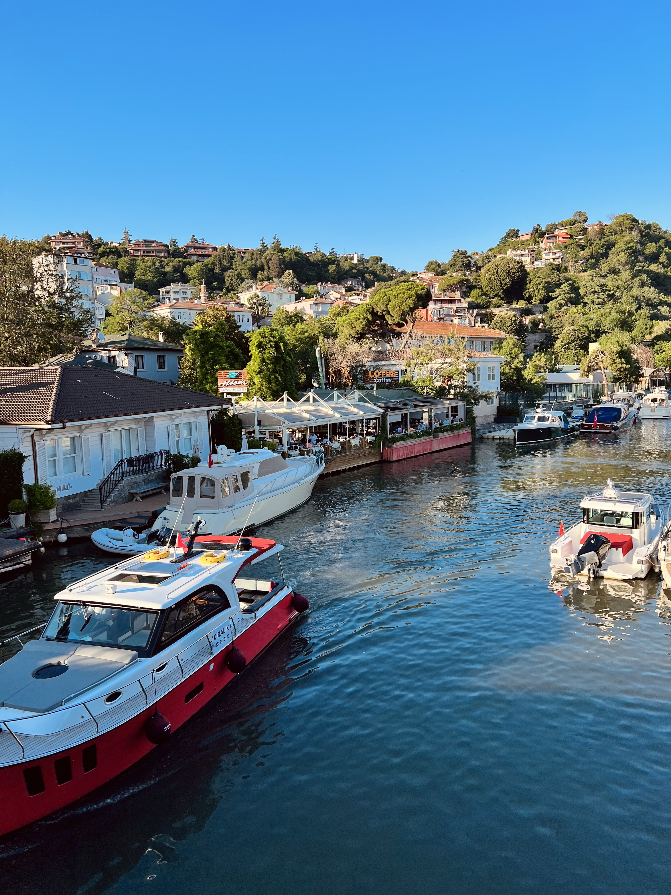

Lesson 0 – Introduction
DSC 180A, Fall 2022
Suraj Rampure
Agenda
- Introductions.
- Capstone program overview.
- Syllabus and logistics.
Suraj Rampure (call me “soo-rudge”)
- Originally from Windsor, ON, Canada 🇨🇦.
- BS (’20) and MS (’21) in Electrical Engineering and Computer Sciences from UC Berkeley 🐻.
- Second year teaching Data Science at UCSD.
- So far, taught DSC 10, 40A, 80, and 90.
- Also teaching DSC 10 this year.
- Outside the classroom: watching basketball, traveling, learning to cook, watching TikTok, FaceTiming my dog 🐶, etc.
- Not Aaron Fraenkel, who designed the capstone sequence.
|  |  |
Course staff
In addition, we have 7 teaching assistants, who will grade parts of your work and guide you through your projects.
- Keng-Chi Chiang (Political Science PhD student, prior capstone TA)
- Praveen Nair (CSE MS student, prior DSC undergrad)
- Teresa Rexin (Statistics MS student, prior capstone TA)
- Samanvitha Sateesha (CSE MS student)
- Umesh Singla (CSE MS student)
- Yuyao Wang (Math PhD student)
- Xinrui Zhang (CSE MS student, prior DSC undergrad and capstone TA)
See their individual expertise at dsc-capstone.github.io/staff.
Capstone program overview
Capstone program goals
By the end of the capstone program, you will apply data science skills through the lifecycle of a two-quarter project. Specifically, you will:
- Learn methodological best practices for working on large projects. Specifically, you will have learned about:
- Reproducible work.
- Effective (visual, oral) communication of work and results.
- Learn how to start an investigation with a question instead of a method.
- Complete a detail-oriented pursuit of a proposal in your chosen domain.
- Produce and show off work that you are proud of!
Capstone challenges
By the numbers, we have a huge capstone program: 203 students, 34 domains, and 50 mentors + liaisons. This invites some unique challenges:
- Topical variety: mentors have varying research interests, and as such, projects can span almost anything imaginable.
- Evaluation: how do we consistently evaluate such varied student work?
- Flipped background: in a typical capstone program, students come in with domain knowledge. In our program, students come in with a methodological toolkit, but no domain knowledge.
These challenges motivate the structure of the program!
Structure of the capstone program
Mentors are responsible for sponsoring a “domain” that can sponsor multiple projects. Students enroll in domains based on their interests.
| Quarter | Domain | Methodology |
|---|---|---|
| 1 | Getting up to speed in domain by working on a replication project (Quarter 1 Project) | Software development, reproducibility, environment independence |
| 2 | Working on an original project (Quarter 2 Project) | Project management, effective communication skills |
Domain
- In Quarter 1, you will focus on learning a domain.
- Each week, your mentor will assign you tasks and readings.
- At the end of the quarter, you will:
- Use these tasks to complete your Quarter 1 Project, in which you will have replicated a known result.
- Propose a more independent Quarter 2 Project in groups. The Quarter 2 Project is the real capstone project!
- In Quarter 2, you will spend most of your time executing your Quarter 2 Project.
Methodology
- The methodology portion of the course teaches best practices for data science projects across a wide variety of domains:
- Responsible resource usage (remote vs. local development).
- Reproducible research (Git, Docker, Python packages, updateable reports and notebooks).
- Effective communication (scientific writing, oral presentations, teamwork).
- You will directly the standards you learn about in the methodology component in your domain work.
- The code you write in your projects will be graded against these standards.
- You will analyze the writing of a publication in your domain using these standards.
Syllabus and logistics
Course website
Bookmark it!
dsc-capstone.github.io
This is where all methodology content and assignment descriptions live. Make sure to read the Syllabus!
Technology
- EdStem: Q&A forum for methodology.
- Make sure you’re active here, since this is where all course-wide announcements will be made.
- Your domain mentor will let you know how they want to communicate with you, but it won’t be through EdStem.
- Gradescope: where all assignments will be submitted.
- DSMLP: campus computing server (similar to DataHub). More on this soon.
- No Canvas! ❌
Discussion sections
- Discussion section is where you meet with your mentor each week.
- Attendance is mandatory, and you must come to discussion section prepared to discuss the tasks and readings they’ve assigned you!
- Discussions are for:
- Asking questions to understand data generating processes and domain-specific methods.
- Brainstorming possible Quarter 2 Project proposals with peers.
- Unless they are domain specific, don’t ask “tech support” questions in discussion – save those for methodology office hours (more on those soon).
Mentor interactions
- Expect your weekly work to be difficult. Your mentors are there to help – ask lots of questions!
- Mentors will each hold at least one office hour per week (either regularly scheduled or by appointment).
- If they haven’t listed them here, ask them for the schedule in your first meeting.
- You should attend these at least three times throughout the quarter.
- Mentors largely operate unaware of how the lecture portion is structured. Give them context, if asking them a question about the domain that relates to lecture!
- If they ever give you instructions on an assignment that contradict our instructions, listen to them (unless something is dramatically different, in which case, let me know).
Participation (10%)
- In total, domain participation amounts to 10% of your grade.
- 5% of this comes from weekly participation questions that you must submit answers to 24 hours before your discussion section.
- Your mentor may come up with custom questions for you to answer; otherwise, you should answer the default questions posted on the course website.
- Answering these before section is crucial for preparing both you and your mentor for section.
- These are in addition to any tasks and readings they assign you, which you won’t necessarily submit anywhere.
- The other 5% comes from an overall participation grade that your mentor will assign you at the end of the quarter.
- Participation in discussion section is required!
Quarter 1 Project (70%)
- Your Quarter 1 Project will be a report that summarizes the work you’ve done in learning your domain. You’ll work on it either individually or in groups, depending on your mentor’s preferences.
- Part 1 (Checkpoint, due Week 5):
- Report: introduction to problem, description of data and/or methods.
- Code: data processing, initial method implementation.
- Part 2 (Final, due Week 10):
- Report: results, discussion of shortcomings and possible improvements
- Code: code that produces the results, using best practices.
- The finalized Quarter 1 Project spec will be posted in ~2 weeks, but it won’t change much from the one currently linked in the syllabus.
Quarter 2 Project Proposal (15%)
- Each Quarter 2 Project is worked on in groups of 2-4. It’s up to your mentor to choose the groups. You’ll submit your proposal with the same group.
- Deliverables for the proposal include:
- A written proposal, containing background research.
- A plan/schedule for execution.
- A 2-3 minute elevator pitch, aimed at a general audience.
- A skeleton for the project (i.e. a GitHub repo with boilerplate).
- You domain mentor will approve your proposal, based on their expertise and flexibility.
- Sticking close to your work in Quarter 1 will allow you to move faster in Quarter 2.
- The finalized Quarter 2 Project Proposal spec will be posted in ~4 weeks, but it won’t change much from the one currently linked in the syllabus.
Quarter 2 Projects
- At the end of Quarter 2, you will submit:
- A public GitHub following best practices for data science project development (a developer should be able to extend your work from this code).
- A public website explaining the project to a specific audience.
- A PDF report, following best practices in scientific writing.
- An elevator pitch (e.g. helpful in job interviews).
- A longer slide-based talk.
- See last year’s Quarter 2 Projects here.
Methodology lectures
- Methodology lectures will be delivered asynchronously in the form of a reading.
- There is a methodology lesson for today, too – more on this soon.
- Each Sunday, a new “lesson website” will be posted on the course homepage. Read through the lesson article when it’s released.
- The live lecture time – Monday 3-3:50PM and 4-4:50PM – will be used to provide you help with the lesson. You can attend either one.
- They will be recorded (though it’s not clear how useful the recordings will be).
- Advice: treat the lecture help sessions as lab time – come here to do the readings, and ask questions as they come up.
Methodology assignments (5%)
- There are 5 methodology assignments, each of which is associated with a methodology lecture.
- Example: access campus computing servers.
- Example: create a Docker container for your project.
- These are typically due on Sundays and should not take very long to complete.
- Methodology assignment 1 is due this Sunday.
- Advice: come to the lecture help sessions to work on methodology assignments! We might even walk through them.
- In addition, we will hold methodology-specific office hours; see the Office Hours page on the course website for the schedule.
Summary: graded components
| Component | Weight |
|---|---|
| Participation questions | 5% |
| Overall participation | 5% |
| Quarter 1 Project | 70% (50% report, 20% code; checkpoint + final for each) |
| Quarter 2 Project Proposal | 15% |
| Methodology assignments | 5% |
Grading
- Assignments are graded by a combination of mentors and DSC 180A TAs.
- Domain mentors will grade your reports.
- Your reports should make it clear that your code is reasonably close to correct!
- Domain mentors may give you feedback in office hours instead of through written feedback.
- Their feedback will be from the standards of the domain!
- DSC 180A TAs will grade your code and other assignments according to methodological standards taught in lecture.
- All assignments graded as A/B/C/F only (i.e. 4/3/2/0 only, no plus/minus) using this rubric.
- Your final grade is computed by the standard GPA conversion.
Summary: meetings
- Discussion.
- Required.
- Need to complete tasks, readings, and participation questions before.
- Lecture help sessions.
- Held on Mondays. Optional and recorded.
- Come for help with lecture (released the day before) and the associated methodology assignment.
- Office hours.
- Domain-specific office hours, hosted by mentors.
- Methodology office hours, hosted by DSC 180A course staff.
- Different questions go to different “experts.”
Advice
- Work slow and steady. This material is hard and you will hit unexpected obstacles.
- Ask questions!
- Access to a mentor like this is rare at UCSD!
- Research is deceptively hard – if you are confused, others likely are too.
- Domains benefit from discussions and working together!
- Don’t be afraid of redoing work. You will rewrite your code many times.
- It doesn’t mean it was wrong the first time; it means you understand it in a different way.
## This week
### Action items
- Read the Servers lesson that’s been posted on the course website. It’ll show you how to access DSMLP, our campus computing cluster.
- I’ll stick around to answer any questions with it.
- Complete Methodology Assignment 1 by Sunday.
- Go to your first discussion section.
- Submit your first participation assignment next week (i.e. 24 hours before your discussion section in Week 2).